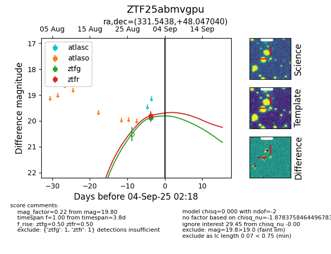

FINK: ZTF25abmvgpu
Lasair: ZTF25abmvgpu
ALeRCE: ZTF25abmvgpu
ZTF25abmvgpu (ztf,fink)
equatorial (ra, dec) = (331.5438,+48.04704)
galactic (l, b) = (96.5759,-6.18641)

last ztfg=19.88, ztfr=19.78
1 ztfg, 3 ztfr detections